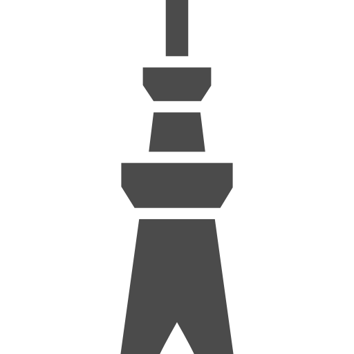
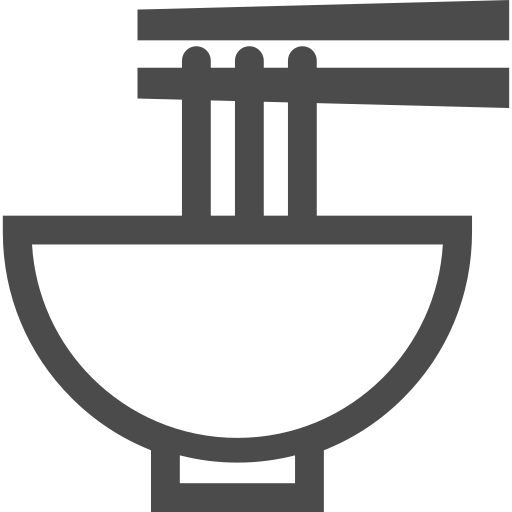
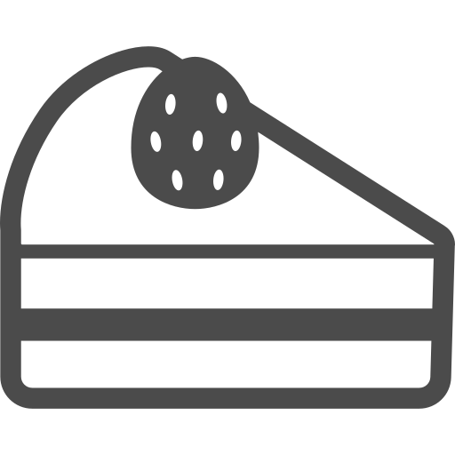

交通アクセス
アクセスマップ
主な公共交通機関リンク
観光アクセス
■ 太宰府天満宮
▶
太宰府天満宮
車：約30〜40分
経路を確認 →
博多駅
▶
太宰府天満宮
バス：約40〜60分
経路を確認 →
博多駅
▶
天神
▶
太宰府駅
▶
太宰府天満宮
所要時間：約40〜50分
経路を確認 →
福岡空港
▶
博多駅
▶
太宰府天満宮
所要時間：約45分
経路を確認 →■ 福岡タワー
▶

福岡タワー車：約20〜30分
経路を確認 →
天神
▶
福岡タワー
バス：約20分
経路を確認 →
福岡空港
▶
博多駅
▶
天神
▶
福岡タワー
所要時間：約40〜50分
経路を確認 →グルメアクセス
博多駅
▶

中洲屋台徒歩約15分
経路を確認 →
博多駅
▶
中洲川端駅
▶
中州屋台
電車＋徒歩 約10分
経路を確認 →
天神
▶
屋台エリア
徒歩約10分
経路を確認 →主要観光地
太宰府天満宮
西鉄「太宰府駅」徒歩約5分／博多駅から約40分
福岡タワー
バス「福岡タワー前」すぐ／天神から約20分
大濠公園
地下鉄「大濠公園駅」徒歩約2分／博多駅から約10分
ご当地グルメスポット
中洲屋台
地下鉄「中洲川端駅」徒歩約3分
博多ラーメン
博多・天神エリアに多数
もつ鍋
中洲・博多エリアに多数
おすすめ飲食店

北キツネの大好物 福岡タワー店話題のスイーツ店。お土産や食べ歩きにおすすめ。
地図で確認 →博多もつ鍋 おおやま（福岡空港）
福岡空港内で本格的なもつ鍋が楽しめる人気店。
地図で確認 →ラーメン滑走路（国内線3F）
食べ比べに最適。
地図で確認 →Bistro いちスタイル
カジュアルに楽しめるビストロ。
地図で確認 →o/sio FUKUOKA
おしゃれなイタリアン。
地図で確認 →